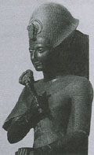

главная  персоналии
персоналии  Рамсес II
Рамсес II
главная |

Личность в историикраткая энциклопедияПроект «Личность в истории» посвящен людям — современникам грандиозных исторических событий, носителям редких качеств или людям, взгляды которых опередили их время. |
|||||||||||||||||||
Коротко |
Статьи |
Персоналии |
Литература |
||||||||||||||||
Рамсес II |
|||||||||||||||||||
|
«Я взываю к тебе, отец мой Амон, окруженный бесчисленными врагами, о которых я не ведал, когда все чужеземные страны ополчились против меня, и я остался один, и нету со мной никого... <...> И пришел Амон, когда я воззвал к нему, и простер он ко мне десницу свою и я возликовал...» Поэма Пентаура. |

Рамсес II. Статуя из черного гранита. XIII в. до н. э. |
||||||||||||||||||
Биографическая справкаРамсес II (ок. 1304–1237 гг. до н. э. — по другим источникам ок. 1290–24 гг. до н. э.), древнеегипетский фараон. В Рамсес II вёл большое храмовое строительство в Египте и в стране Куш (Нубия): были возведены храм Осириса в Абидосе, гипостильный зал в Карнаке (в Фивах), пристройка к храму в Луксоре (в Фивах), храм Рамессеум (на западном берегу Нила, в западной части Фив) и др. Столицей Египта стал город Пер-Рамсес Мериамон, построенный в северо-восточной Дельте на месте Авариса. Хронология
Цитаты«И укрепилось сердце мое, и возликовала грудь. И совершилось все по замыслу моему, я подобен был Монту в миг величия его. Я стрелял правой рукою, а левой — захватывал в плен! Я был для врагов подобен Сутеху в час славы его. Две тысячи пятьсот колесничих, окружавших меня, распростерлись пред конями моими, ни один из них не поднял руки на меня. Сердца их утратили мужество от страха передо мною, руки их обессилели, они не могли натянуть тетиву,не нашлось у них сердца, чтобы взяться за копья.». (Поэма Пентауэра. 128-137. «В одиночку сражался я, побеждая тьмы чужеземцев, лишь великие кони «Победа в Фивах» и «Мут Благая» пребывали со мною. Только они поддерживали меня, когда сражался я в одиночестве против множества иноземных стран». (Поэма Пентауэра. 265-269. «Сила твоя тяготеет над страною хеттов. Разве хорошо, что ты убиваешь слуг своих? Твой лик свиреп, нет у тебя милосердия. Смотри, вчера ты убил сотни тысяч […] Пришел ты сегодня и не оставил наследников нам. Не будь жесток в деяниях своих, царь! Мир благотворнее битвы. Дай нам дышать». (Из письма царя Муваталлиса Рамзесу II. «Да будут дети детей правителя хеттов в братстве и мире с детьми детей Рамсеса-Мериамона, великого властителя Египта, причем они будут в нашем состоянии братства и нашем состоянии [мира]. Да будет Египет [вместе со страной хеттов] в мире и братстве, как мы вековечно». (Из мирного договора между Рамзесом II «…Если выступит другой враг против земель… великого правителя Египта, и он пошлет [сообщение] правителю хеттов, говоря: «Иди со мной в помощь против него!», то придет правитель хеттов, и правитель хеттов повергнет его врага». (Из мирного договора между Рамзесом II Список литературы
|
|||||||||||||||||||
|